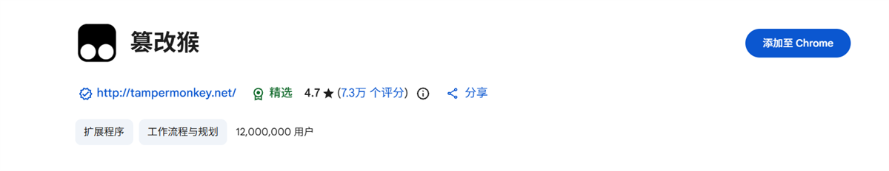
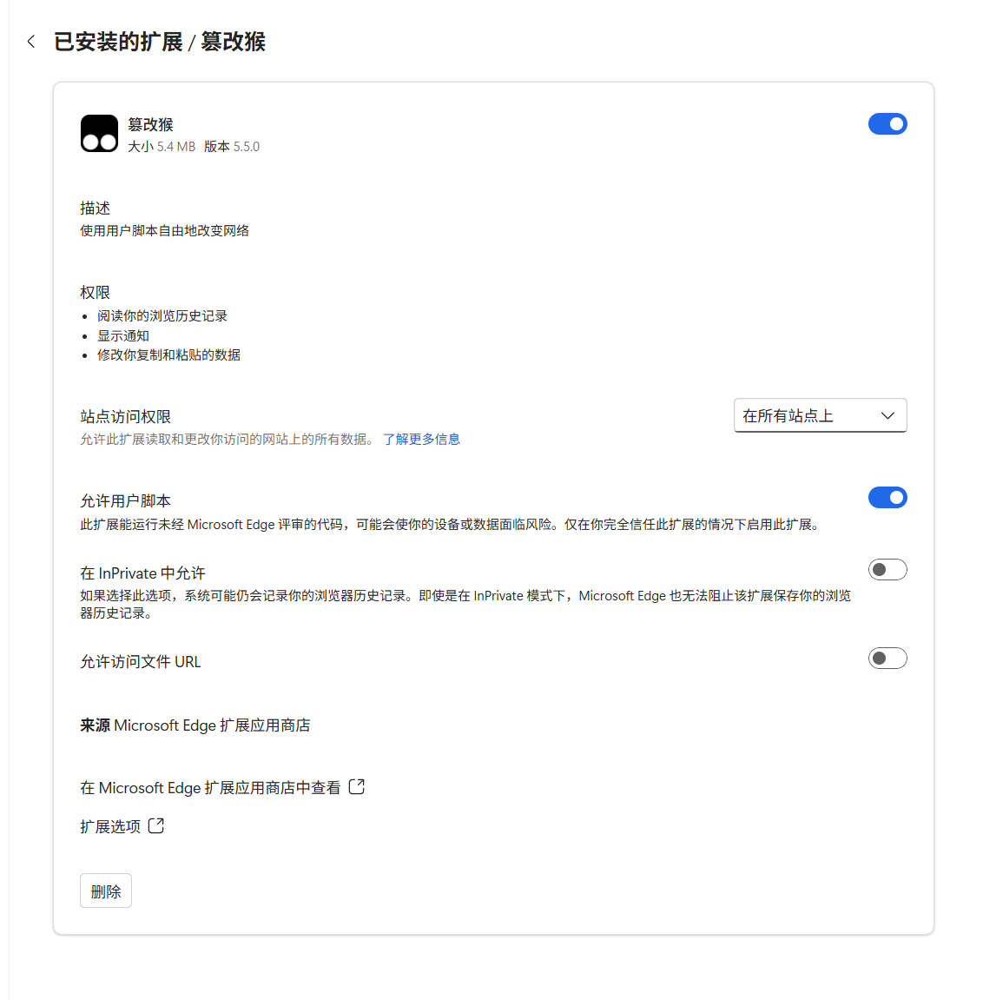
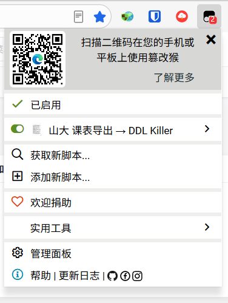
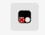
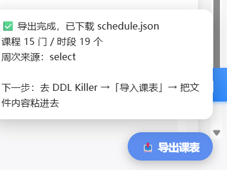
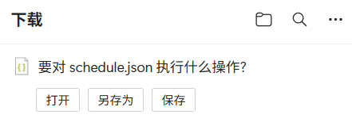
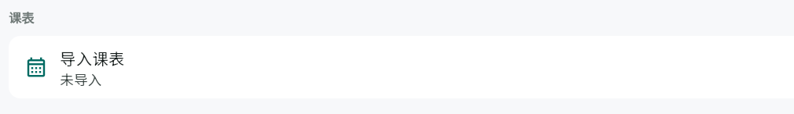

如何获得课表
其他学校还在陆续接入。欢迎你提供课表样本，帮助我们更快支持你的学校。🎀
你可以在 DDL Killer「我的 → 导入课表 → 提交课表样本」留下学校信息和样本。 样本确认能帮助我们完善课表导入后，我们会送上一份 AI 体验奖励，感谢你的帮助。 看看怎样提供样本
从山大教务系统导出整学期课表，导入 DDL Killer。全程在你自己电脑上完成，不需要把账号密码交给任何人。
schedule.json 的文件。把它里面的内容粘进 DDL Killer 的
「导入课表」，课表就进去了 —— 这门课在第几周、周几、第几节、哪个教室，全都有。
整个过程大约 5 分钟，其中 20 秒是脚本替你翻课表。
先说清楚：为什么不是"填账号密码"
你可能会想：直接在这 App 里填学号密码不就行了？答案是做不到，也不该做。
山大的教务系统在新设备首次登录时会发短信验证码。所以任何要你「把账号密码交给某个网站或 App」 的方案，要么根本登不上去，要么就意味着你的密码被存到了别人的服务器上 —— 而这台服务器可能只是 某个同学的一台电脑。
所以这里反过来做：
开始之前，确认这三件事
- 用电脑。目前只支持电脑浏览器（Chrome / Edge / Firefox），手机不行。
- 能登录教务系统。网址是
bkzhjx.wh.sdu.edu.cn，需要你的学号和密码。 - 大概 5 分钟。第一次装脚本稍微麻烦点，装完以后每学期只要点一下按钮。
1装油猴（Tampermonkey）
油猴是一个浏览器扩展，负责运行我们要用的脚本。
在你的浏览器扩展商店里搜索 Tampermonkey，或者直接点下面的链接：
- Edge：Edge 加载项商店 · Tampermonkey
- Chrome：Chrome 应用商店 · Tampermonkey
- Firefox：Firefox 附加组件 · Tampermonkey
点「获取」/「添加到浏览器」，确认安装。装完之后，浏览器右上角工具栏会出现一个 Tampermonkey 图标（两个重叠的小方块，黑白的或彩色的）。

kbimg/01-install-tampermonkey.png2Edge / Chrome 要多开一个开关 ⚠️
Firefox 没有这道闸，用 Firefox 的话可以直接跳过这一步。
Edge 和 Chrome 都有一道闸：扩展默认不允许运行用户脚本。Tampermonkey 会在页面上方弹一条蓝色横幅提醒你， 内容是「请启用"允许用户脚本"扩展设置」—— 看到它就说明是这个问题。
打开它：
- 地址栏输入
edge://extensions/（Chrome 是chrome://extensions/）回车，打开扩展管理页。 - 左下角把 「开发人员模式」打开（如果还没开）。
- 找到 Tampermonkey 那张卡片，把 「允许用户脚本」开关打开。
- 回到教务系统页面，按 F5 刷新。

kbimg/02-allow-userscripts.png3装课表导出脚本
把 sdu-kebiao-export.user.js 装进油猴。
方式一（推荐）：直接点下面的按钮。装好油猴的浏览器会自动弹出油猴的安装页，点「安装」就完事了。
📥 安装「山大 课表导出」脚本v1.0.5 安装地址：https://ddlkiller.com/userscript/sdu-kebiao-export.user.js
方式二（点了没反应）：在按钮上右键 →「链接另存为」，存成一个
.user.js 文件，再把它拖进浏览器窗口，油猴同样会弹出安装页。
方式三（拖拽也不管用）：手动把源码粘进油猴。
- 点工具栏上的 Tampermonkey 图标 → 管理面板。
- 点 「+」 新建脚本。
- 编辑器里有一段模板代码，Ctrl+A 全选删掉。
- 打开上面的安装地址，Ctrl+A 全选、Ctrl+C 复制，粘贴进去，Ctrl+S 保存。
装好后，管理面板里应该出现一条名为 「山大 课表导出 → DDL Killer」 的脚本， 右侧开关是打开的。如果它是灰的，点一下打开。

kbimg/03-install-script.png
kbimg/03b-tampermonkey-disabled.png
反过来，工具栏上的油猴图标如果带个红色叉号，就是这个样子 —— 说明脚本
没在当前这页跑起来：多半是第 2 步那个开关还没打开；
开关开着的话，就确认下地址栏是不是 bkzhjx.wh.sdu.edu.cn。
4登录教务系统
用你自己的学号密码正常登录，该收的短信验证码照收。
打开 https://bkzhjx.wh.sdu.edu.cn 并登录。如果这台电脑是第一次登录，会要求短信验证码 —— 正常走流程就行。
5点「导出课表」，等 20 秒
这一下就把整学期的课表翻完。
在教务页面的右下角找到蓝色按钮 「📤 导出课表」，点它。
接下来它在按钮上方显示进度：抓取第 7/20 周…。
脚本会一周一周地翻课表（每周之间停顿 0.2 秒，不给学校服务器压力），大概 20 秒跑完。
这期间别关页面。

kbimg/06-export-button.png跑完之后，浏览器会自动下载一个文件：schedule.json（一般在「下载」文件夹里）。

kbimg/08-json-file.png6把结果导入 DDL Killer
最后一步。
打开 DDL Killer，点底部最右边的 齿轮进「我的」页，里面有 导入课表。进去之后可以任选一种方式：
推荐：点「选择课表文件」，在手机的文件选择器或电脑的文件窗口中找到 schedule.json。读取后，确认内容并点导入课表。Android App、手机网页版和电脑网页版都可以使用。取消选择不会更改现有课表；应用只读取你选中的文件。
-
把
schedule.json直接拖进页面（网页版推荐）。 文件拖到窗口上方时整页会变蓝、中间浮出「松手导入课表」，松手就自动导入并保存。 -
拖拽不方便的话：用记事本（或 VS Code、或任何文本编辑器）打开
schedule.json， Ctrl+A 全选、Ctrl+C 复制， 再粘贴进输入框，点导入课表。

kbimg/09-import-app.png出问题了 / 常见问题
右下角没有按钮，页面上什么都没有
按可能性从高到低排查：
-
按 F12 打开控制台，看有没有这一行：
你看到的 说明 怎么办 完全没有这行 脚本压根没在这页跑起来 看下面第 2、3 条 有这行， 选定宿主=是(无，本层不放按钮)脚本跑了，但没找到能放按钮的地方 把这行截图发给维护者 有这行，宿主也对，就是看不见按钮 按钮被页面自己的元素盖住了 把这行截图发给维护者 正常应该长这样：
[课表导出] 已注入 v1.0.4 | url=… | 本层=… | 有body=… | 子frame数=… | 选定宿主=… - 用 Edge 的话，检查「允许用户脚本」开关。 这是最常见的坑，见上面第 2 步。油猴弹窗里如果写着「此脚本还未被执行」，八成就是它。
-
确认当前页面是教务系统。
地址栏必须是
bkzhjx.wh.sdu.edu.cn开头。如果你停在统一身份认证pass.sdu.edu.cn，脚本不会在那里运行 —— 先登录完回到教务系统。 - 确认脚本是打开的。 点油猴图标，看「山大 课表导出 → DDL Killer」左边的开关是不是灰的。灰的点一下。
- 装完之后要刷新页面。 脚本只在页面加载时注入，所以装好脚本后回到教务页面按一下 F5。

kbimg/10-f12-console.png提示「没读到课表」
最常见的是登录过期了。刷新页面、重新登录（该收的短信验证码照收）， 回到智慧教学平台的首页再点一次导出。
还有一种情况：页面停在选课系统的入口页（只有选课期间登录才会遇到，平时见不到）。 那里读不到课表 —— 点一下页面上的「进入首页」，进到智慧教学平台再导出就行。
导出的课不全 / 少了几门
脚本会抓满 20 周再合并去重，正常情况下不会漏。如果发现明显不对：
- 确认导出时页面已经进到智慧教学平台（能看到「我的课程」）。
- 重新导出一次 —— 中途网络抖动可能让某一周没抓到。
- 还是不对的话，把导出的
schedule.json和教务页面截图发给维护者。
会不会误操作、改坏我的课？
不会。脚本只读：全程只发「查询课表」这一种请求，不碰任何选课 / 退课 / 提交接口。 它做的事情，等价于你在页面上把每周课表翻一遍再抄下来，仅此而已。
下学期要重新弄吗？
脚本和油猴都不用重装。学期变了，脚本里写死的学期编号会一起更新 —— 新版本发布后，油猴会定期自动检查并更新，一般不用你操心。
想马上拿到新版：回第 3 步再点一次那个安装按钮，覆盖安装就行 （也可以到油猴的「管理面板」里手动检查更新）。
怎么卸载？
油猴 →「管理面板」→ 删掉「山大 课表导出 → DDL Killer」这一条；不想要油猴了，就到浏览器扩展页把 Tampermonkey 移除。删掉不影响你已经导入 DDL Killer 的课表。
安全与隐私说明
把话说全，你可以自己判断：
| 它做什么 | 它不做什么 |
|---|---|
| 用你浏览器里已有的登录态，向教务系统自己的课表接口发查询请求 | 不读取、不索取你的学号密码 |
| 把查到的课表整理成一个 JSON 文件，下载到你自己的电脑上 | 不把任何数据发送到维护者的服务器或任何第三方 |
| 在页面右下角画一个按钮 | 不写数据库、不提交、不改动教务系统的任何数据 |
想自己验证的话：脚本是一个纯文本的 .user.js 文件，用记事本就能打开读完。
搜一下代码里出现的网址，你只会看到 bkzhjx.wh.sdu.edu.cn 一个域名。
脚本使用声明
课表导出脚本仅用于读取你本人有权访问的课表数据。请先在自己的浏览器中登录本校教务系统；脚本不参与登录，不收集账号密码，也不会修改选课或其他教务数据。
导出的文件保存在你的设备上，脚本不会向 DDL Killer、维护者或其他第三方转发任何课表数据或登录信息。之后是否将文件导入 DDL Killer 或主动提交课表样本，由你自行选择。
使用前，请确认符合本校教务系统的使用规定，并在导入后核对课程、周次和上课时间。DDL Killer 仅提供课表导出与导入的技术支持；对于违反本校规定的使用行为，或因学校系统变化、导出结果偏差等造成的后果，DDL Killer 不承担责任。
让课表支持更多学校
不同学校的课表格式不太一样，你提供的样本能帮助我们了解课程、周次和上课时间。不知道怎么导出也没关系，可以先告诉我们学校、校区和教学平台，或提供一张课表截图。
- 优先使用教学平台自带的导出功能，保存 Excel、PDF 或 JSON。请尽量提供完整学期的课表。
- 没有导出功能时，打开具体课表页面，等待课程加载完成，再用浏览器保存网页。保存后打开文件检查：能否看到课程、周次、节次？如果文件里只有菜单或空白页面，可以改用导出文件，或附上课表截图。
- 如果页面只显示某一周，请注明并补充完整周次；校历第一周日期、节次作息表和截图也很有帮助。
- 打开 DDL Killer 的「我的 → 导入课表 → 提交课表样本」，填写学校和平台并添加附件。回复与奖励会发送到「消息」。
分享前请遮盖姓名、学号等个人信息，也不要提供密码或登录信息。样本只用于了解课表格式和完善导入功能，应用内的附件最多保留 60 天，也可以在反馈详情中删除。查看隐私说明
我们确认样本有帮助后，会通过“消息”送上 AI 体验奖励。谢谢你帮 DDL Killer 支持更多学校。🎀